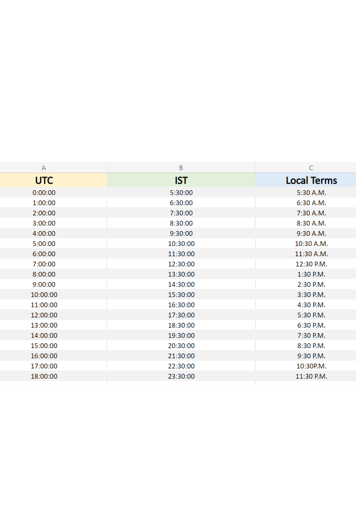

Here, the region of concern is India. The city is Ranchi. Ranchi is located in the state of Jharkhand.
The geography of India is diverse. Mountain Peaks, Mountain Ranges, Plateaus, Desert,Islands, Coastal lines, Plains..you name it,India has it. Surrounded by water on three sides, it is a peninsular land. The desert areas house the scarcest vegetation while the tropical rainforests and Western Ghats have most of them. On the top lies the Himalayas, at the bottom lies the Indian Ocean and on the sides are the Arabian Sea and Bay of Bengal with two Island Union Territories of Andaman and Lakshadweep.
Such a varied geography brings a capricious/sporadic climate.
The climate of India ranges from Tropical in South to a Temperate Climate in the north.Some parts of India in the Himalays have a Polar Climate.
The Himalayas act as a barrier to the frigid katabatic winds flowing down from Central Asia. Thus, northern India is kept warm or only mildly cooled during winter; in summer, the same phenomenon makes India relatively hot.
Summer lasts between March and June in most parts of India. Temperatures can exceed 40 °C (104 °F) during the day. The coastal regions exceed 30 °C (86 °F) coupled with high levels of humidity.
In the Thar desert area temperatures can exceed 45 °C (113 °F). The rain-bearing monsoon clouds are attracted to the low-pressure system created by the Thar Desert. The southwest monsoon splits into two arms, the Bay of Bengal arm and the Arabian Sea arm. The Bay of Bengal arm moves northwards crossing northeast India in early June. The Arabian Sea arm moves northwards and deposits much of its rain on the windward side of Western Ghats. Winters in peninsula India see mild to warm days and cool nights. Further north the temperature is cooler.
Temperatures in some parts of the Indian plains sometimes fall below freezing. Most of northern India is plagued by fog during this season. The highest temperature recorded in India was 51 °C (124 °F) in Phalodi, Rajasthan. .[64] And the lowest was −60 °C (−76 °F) in Dras, Jammu and Kashmir.
Read More
 Jharkhand or "Land of Forests" is located in the estern part of the country. It is a land locked state which has Plateau as its geographical feature.
Being situated in the ChotaNagpur Plateau region, the land is also rich in minerals. This state has one of the highest mining activities in India. Largest iron ore mines are located here. Due to this, the areas near the mines experience adverse temperatures upto degree Celcius.
Jharkhand or "Land of Forests" is located in the estern part of the country. It is a land locked state which has Plateau as its geographical feature.
Being situated in the ChotaNagpur Plateau region, the land is also rich in minerals. This state has one of the highest mining activities in India. Largest iron ore mines are located here. Due to this, the areas near the mines experience adverse temperatures upto degree Celcius.
The state houses some of the most extravagant waterfalls of the country.Climate of Jharkhand varies from Humid subtropical in the north to tropical wet and dry in the south-east. The main seasons are summer, rainy, autumn, winter and spring. The summer lasts from mid-April to mid-June.
May, the hottest month, characterised by daily high temperatures around 37 °C (99 °F) and low temperatures around 25 °C (77 °F). The southwest monsoon, from mid-June to October, brings nearly all the state's annual rainfall, which ranges from about 1,000 mm (40 in) in the west-central part of the state to more than 1,500 mm (60 in) in the southwest.
Nearly half of the annual precipitation falls in July and August. The winter season lasts from November to February. The temperatures in Ranchi in December usually vary from 10–24 °C (50–75 °F). Spring season lasts from mid-February to mid-April.
Read More
In Ranchi, the wet season is hot, oppressive, and overcast and the dry season is warm and mostly clear. Over the course of the year, the temperature typically varies from 51°F to 97°F and is rarely below 45°F or above 104°F.
Based on the beach/pool score, the best time of year to visit Ranchi for hot-weather activities is from mid March to mid May.
Read More
The climate of India ranges from Tropical in South to a Temperate Climate in the north.Some parts of India in the Himalays have a Polar Climate.
The Himalayas act as a barrier to the frigid katabatic winds flowing down from Central Asia. Thus, northern India is kept warm or only mildly cooled during winter; in summer, the same phenomenon makes India relatively hot.
Summer lasts between March and June in most parts of India. Temperatures can exceed 40 °C (104 °F) during the day. The coastal regions exceed 30 °C (86 °F) coupled with high levels of humidity.
In the Thar desert area temperatures can exceed 45 °C (113 °F). The rain-bearing monsoon clouds are attracted to the low-pressure system created by the Thar Desert. The southwest monsoon splits into two arms, the Bay of Bengal arm and the Arabian Sea arm. The Bay of Bengal arm moves northwards crossing northeast India in early June. The Arabian Sea arm moves northwards and deposits much of its rain on the windward side of Western Ghats. Winters in peninsula India see mild to warm days and cool nights. Further north the temperature is cooler.
Temperatures in some parts of the Indian plains sometimes fall below freezing. Most of northern India is plagued by fog during this season. The highest temperature recorded in India was 51 °C (124 °F) in Phalodi, Rajasthan. .[64] And the lowest was −60 °C (−76 °F) in Dras, Jammu and Kashmir.
Read More
The state houses some of the most extravagant waterfalls of the country.Climate of Jharkhand varies from Humid subtropical in the north to tropical wet and dry in the south-east. The main seasons are summer, rainy, autumn, winter and spring. The summer lasts from mid-April to mid-June.
May, the hottest month, characterised by daily high temperatures around 37 °C (99 °F) and low temperatures around 25 °C (77 °F). The southwest monsoon, from mid-June to October, brings nearly all the state's annual rainfall, which ranges from about 1,000 mm (40 in) in the west-central part of the state to more than 1,500 mm (60 in) in the southwest.
Nearly half of the annual precipitation falls in July and August. The winter season lasts from November to February. The temperatures in Ranchi in December usually vary from 10–24 °C (50–75 °F). Spring season lasts from mid-February to mid-April.
Read More
Read More
"Loo" is a strong, hot, dusty and dry summer wind from the west which blows over North Indian Indo-Gangetic Plain.It is strong in the months of June but this year India has experienced hottest Summer in 122 years with 71% rain deficit.
More than 1500 people die every year in India due to the heatwaves. The situation becomes alarming when the temperature rises upto 45 degree Celcius or 318.15K.
From the plots we infer, the time between 6:00:00 to 10:00:00 UTC or 11:30 A.M. to 2:30 P.M. have its temperature variations lying in the range of 305 K and above. Thus these hours should avoided on 24-03-2022. Read more Here

From the plots we infer, the time between 6:00:00 to 10:00:00 UTC or 11:30 A.M. to 2:30 P.M. have its temperature variations lying in the range of 305 K and above. Thus these hours should avoided on 24-03-2022. Read more Here
The regions of Thar Desert which is spread ove the states of Rajasthan and some
parts of Gujarat are hottest during the day due to rapid heating of sand .During the night, the sand cools down very fast and thus creating a huge temperature difference during the day and nighttime.During the day less water means more heating. During the night less water means more cooling.
 Deserts are hot during the day due to a lack of moisture on the ground. The evaporation of water diverts energy that would otherwise cause heating. Deserts are cold at night because of a lack of moisture on the ground and a lack of water vapor in the air. Water on the ground retains heat, and water vapor in the air acts like a blanket which traps infrared radiation, preventing it from radiating into space. Read MORE
Deserts are hot during the day due to a lack of moisture on the ground. The evaporation of water diverts energy that would otherwise cause heating. Deserts are cold at night because of a lack of moisture on the ground and a lack of water vapor in the air. Water on the ground retains heat, and water vapor in the air acts like a blanket which traps infrared radiation, preventing it from radiating into space. Read MORE
Below is the list of temperatures. You can figure out the Max. Temp = 308.875 K, Min. Temp = 293.5 K , Mean Temperature for the day= 302.4276 K.
.png) The above list is in UTC. This can be converted simply into IST(Indian Standard Time). The IST is 5 hours and 30 minutes ahead of UTC. For e.g. 4pm UTC is 9:30 P.M. in India. For simplicity, refer the table mentioned below.
The above list is in UTC. This can be converted simply into IST(Indian Standard Time). The IST is 5 hours and 30 minutes ahead of UTC. For e.g. 4pm UTC is 9:30 P.M. in India. For simplicity, refer the table mentioned below.

Data structure is a fundamental concept of any programming language, essential for algorithmic design.
As per the table, the highest air temperatures are recorded during 8:00:00 and 9:00:00 i.e. between 1:30 P.M. to 2:30 P.M. Thus the workforce can resume after these hours on this day.